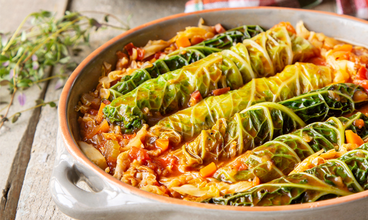

Fresh Sausages with Lombarda Cabbadge
Home

Description
The fresh sausages with lombarda cabbadge recipe is a classic that crosses many
generations. Gather the family and enjoy the meal without any hurries.
Ingredients:
- 2 Medium sized tomatoes;
- frest green onion to taste
- 250g of rice
- thyme to taste
- 3 sps. of tomato polp
- pepper to taste
- salt to taste
- 1 bay leaf
- 1 medium lombarda cabbadge
- 1 celery
- 2 carrots
- 6 gloves of garlic
- 1 onion
- 6 fresh sausages
- 80g of bacon in strips
- olive oil to taste
Steps
- Twist the sausages in half and cut them so that you have twelve of them.
- Give them little colour in a deep pan with olive oil, for about 10 minutes.
Take them out to a plate and put the bacon on the same pan. Add the onion and gloves
of garlic, thinly minced, and the celery cut in thin blades. Let it cook over
moderate heat, till the onion is clear.
- Separate the leaves from the cabbadge, wash them and trim the endings. Choose the twelf
biggest leaves with no tears and boil them in water for about 6 minutes.
Cut in julian the others and keep them.
- Wrap the cabbadge leaves around the sausages. If needed, use toothpicks to ensure they remain wrapped.
- Peel the carrots, dice them and add to the pan. Add the cleaned tomato, diced in small chunks,
the bay leaf, a tea sp. of salt and pepper. Cover and let it cook on a slow heat.
- Add the tomato polp to the pan and mix it well. Put the sausages in the pan. Add thyme and cook it with the pan closed,
on a moderate heat for about 30 minutes or till the cabbadge is soft.
- At the same time, prepare the rice in boiling water for about 12 minutes.
- Serve the sausages with rice sprinkled with chopped chives.